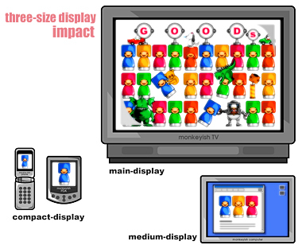

common style. meeting : keyword 02
与视觉信息传送“ST2”(screen-to-screen Transfer)一样，它是通过逻辑组合实现样式的一个例子。被称为“3米文化”(离开一定 距离观看)的大型电视，在面前观看的个人电脑以及拿在手中的便携电话，这三种显示器,把“型号大小”的规格作为标准，发挥着各种 各样的用途。

以电影为例，用“大型显示器”观看影片，用"中型显示器"参考相关详细信息，将著名镜头，宣传短片，预告片等移动到“小型显示器” 中随身观看。此外在学习环境中，可以划分成“授课（大型显示器）”，“提问（中型显示器）”，“空闲时间复习（小型显示器）”。
这种形式随着技术的发展一一登场，每时每刻都进行着不断的更新换代。
Copyright (C) 2006 monkeyish studio. All Rights Reserved.